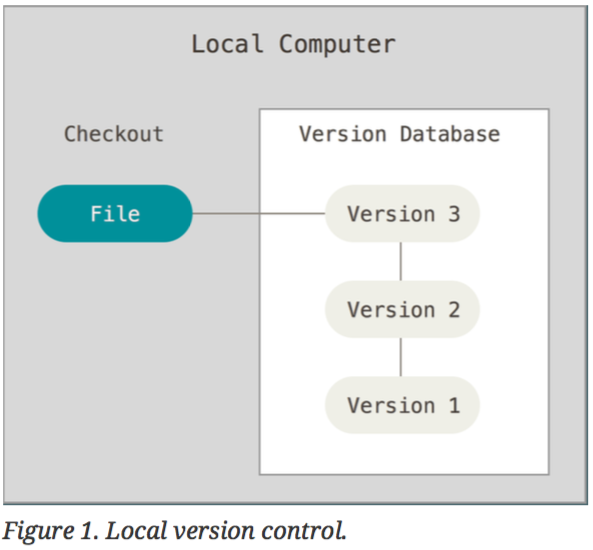
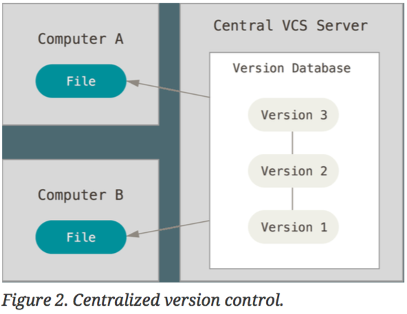
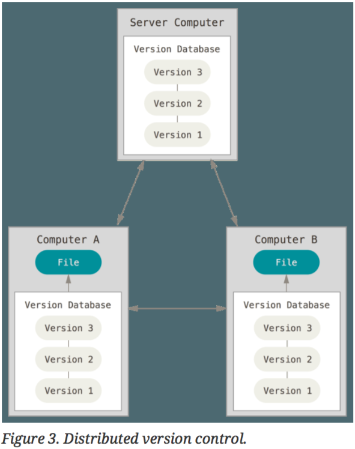
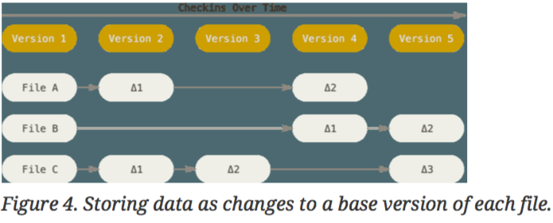
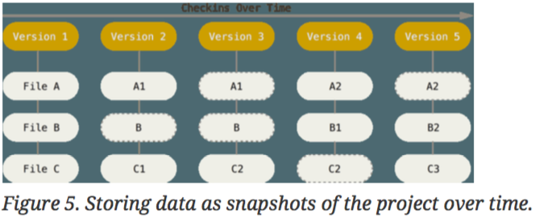
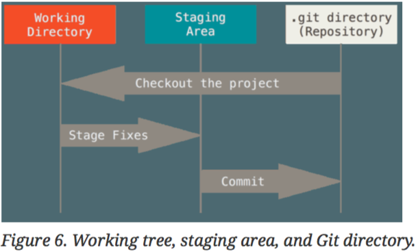

require 'digest'
Digest::SHA1.hexdigest '<some awesome code>'
=> "ad23275837d17962d3deaa004d663e76c4fb17f1"
$ ls -a
drwxr-xr-x 7 jesus staff 224B Feb 9 11:47 ./
drwxr-xr-x@ 7 jesus staff 224B Feb 1 16:30 ../
drwxr-xr-x 11 jesus staff 352B Feb 9 11:47 .git/
-rw-r--r-- 1 jesus staff 13B Feb 1 17:03 config.yml
drwxr-xr-x 7 jesus staff 224B Feb 9 11:39 images/
drwxr-xr-x 12 jesus staff 384B Feb 9 11:29 slides/
-rw-r--r-- 1 jesus staff 998B Feb 9 11:47 slides.md
$ git config --global user.name "Jesús Abarca"
$ git config --global user.email jesus@abarca.xyz
$ git init
or:
$ git clone https://github.com/jesusabarca/basic-git.git
$ git status
On branch master
No commits yet
Changes to be committed:
(use "git rm --cached <file>..." to unstage)
new file: slides.md
Untracked files:
(use "git add <file>..." to include in what will be committed)
config.yml
images/
slides/
$ cat .gitignore
*.a
build/
doc/*.txt

$ git add some_file.rb
$ git status
On branch master
No commits yet
Changes to be committed:
(use "git rm --cached <file>..." to unstage)
new file: slides.md
Changes not staged for commit:
(use "git add <file>..." to update what will be committed)
(use "git checkout -- <file>..." to discard changes in working directory)
modified: slides.md
$ git diff
$ git diff --staged
$ git commit
$ git config --global core.editor nvim
$ git commit -m 'An awesome commit message.'
$ rm slides.md
$ git add slides.md
[:a, :b].each do |a|
puts a
end
Is less important